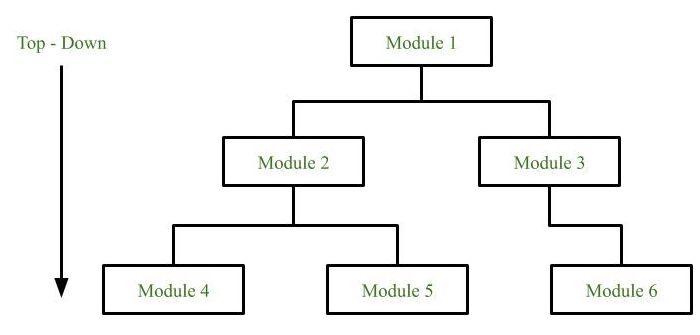
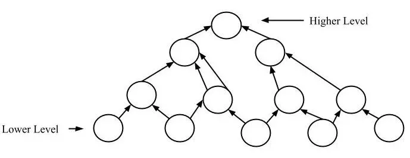

5.13 Top-Down and Bottom-Up Design
When designing complex systems, choosing the right approach for software development is important. Two fundamental design approaches are top-down design and bottom-up design. Each has its own advantages, disadvantages, and use cases. They represent opposite directions of design thinking and are linked to function-oriented design (top-down) and object-oriented design (bottom-up).
Top-down design model
In the top-down model, an overview of the system is formulated without going into detail for any part of it. Each part is then refined into more detail, defining it further until the entire specification is detailed enough to validate the model.
If we look at a problem as a whole, it may appear impossible because it is so complicated. Complicated problems can be solved using top-down design, also called stepwise refinement.

How the top-down approach works
- The problem is broken into major components first.
- Each component is refined into smaller subcomponents.
- This process continues until every part is simple enough to implement.
- Refinement is a process of elaboration — from a highly conceptual model to lower-level details.
- The complete system is obtained by combining the definitions of all subsystems and components.
Example — university management system (top-down)
Consider designing a university management system using top-down design:
- Level 0 — System overview: University Management System.
- Level 1 — Major modules: Student Management, Faculty Management, Course Management, Examination System.
- Level 2 — Submodules: Student Management breaks into Admission, Registration, and Fee Payment.
- Level 3 — Detailed functions: Admission breaks into Validate Application, Assign Roll Number, and Generate ID Card.
- Each level is refined further until every function can be implemented directly in code.
Example — word processor (top-down)
Designing a word processor also follows stepwise refinement:
- Level 0: Word Processor Application.
- Level 1: File Handling, Text Editing, Formatting, Print Module.
- Level 2: Text Editing breaks into Insert Text, Delete Text, Copy/Paste, and Find/Replace.
- Level 3: Find/Replace breaks into Search String, Match Case, and Replace All.
- Starting from the whole application and refining downward makes the complexity manageable.
Advantages of top-down design
- Simplifies complex problems: Breaking problems into smaller parts helps identify what needs to be done.
- Easy to identify requirements: At each step of refinement, new parts become less complex and therefore easier to solve.
- Promotes reusability: Parts of the solution may turn out to be reusable in other systems.
- Collaboration-friendly: Breaking problems into parts allows more than one person to work on the problem simultaneously.
- More systematic: Provides a clear, structured path from requirements to implementation.
- Cost and time prediction: In correspondence with user requirements, cost and time prediction is possible.
- Most commonly used for small and medium-sized products.
Disadvantages of top-down design
- When a problem is very complex and very large, the entire problem cannot always be understood as a whole.
- The top function of the system might be hard to identify in some domains.
- Implementation details can vary throughout the process, which may cause inconsistency.
- Each part is programmed separately, which can introduce redundancy.
- Difficult to apply when low-level components must be reused from existing libraries.
Bottom-up design model
In contrast, the bottom-up design model starts by defining the system's individual parts first. Once the individual components are detailed, they are integrated into larger modules. This process continues until the system is fully integrated.
The bottom-up approach is often used in object-oriented programming languages like C++, Java, and Python, where individual objects are identified and developed first.

How the bottom-up approach works
- Smaller components or objects are identified and specified first.
- These smaller parts are linked together to form larger components.
- Integration continues until the complete system is built.
- As the design progresses upward, the level of abstraction increases.
- This method focuses on creating well-defined and reusable low-level components before deciding how to integrate them.
Example — online shopping system (bottom-up)
Consider building an online shopping system using bottom-up design:
- Step 1 — Low-level classes: Build
Product(title, price, stock),Customer(name, email, address), andPayment(method, amount, status) classes first. - Step 2 — Mid-level modules: Combine classes into
ShoppingCart(uses Product + Customer) andOrder(uses Product + Payment). - Step 3 — High-level system: Integrate ShoppingCart and Order into the complete E-Commerce Application.
- Each class is designed, coded, and tested independently before integration.
Example — library system (bottom-up)
Building a library system from the bottom up:
- Step 1: Create
Bookclass (ISBN, title, author) andMemberclass (memberId, name) as independent components. - Step 2: Build
IssueRecordclass that links a Book and a Member for borrowing. - Step 3: Integrate all classes into the
LibrarySystemthat manages books, members, and issue records. - Reusable low-level classes like Book and Member can be used in other systems as well.
Advantages of bottom-up design
- Reusability of low-level components: Decisions about reusable low-level utilities are made early in the design.
- Focused problem-solving: Developers can focus on solving smaller and more isolated problems first.
- Increased modularity: The modular approach makes it easier to update individual components without affecting the entire system.
- Suitable for large projects where the full system scope is hard to define upfront.
- Easy for designers to work incrementally — build and test components independently.
- A working program of components is available early in the process.
Disadvantages of bottom-up design
- Produces a complex architecture that can be difficult to understand and manage.
- Sometimes we cannot build a complete program from the pieces we started with.
- Building a program can be difficult if modules are not assembled in a logical order.
- Overall system structure may emerge inconsistently if components are not designed with integration in mind.
- Harder to predict total cost and schedule upfront.
Key differences — top-down vs bottom-up
| S. No. | Top-Down Approach | Bottom-Up Approach |
|---|---|---|
| 1. Focus | Focuses on breaking the problem into smaller, more manageable parts. | Solves smaller problems and integrates them into a complete system. |
| 2. Languages | Mainly used in structured programming languages like COBOL, Fortran, and C. | Mainly used in object-oriented languages like C++, C#, Java, and Python. |
| 3. Redundancy | Each part is programmed separately, so redundancy may occur. | Redundancy is minimised by using data encapsulation and data hiding. |
| 4. Communication | Communication among modules is less during initial design. | Modules must communicate to integrate the system. |
| 5. Primary use | Used for debugging and module documentation. | Basically used in testing. |
| 6. Process | Decomposition of the system — breaking it into smaller components. | Composition of the system — combining low-level components into a higher-level structure. |
| 7. Identification | The top function of the system might be hard to identify. | Sometimes we cannot build a program from the pieces we have started with. |
| 8. Implementation | Implementation details can vary throughout the process. | Building a program can be difficult if modules are not assembled in a logical order. |
| 9. Testing pros | Easier isolation of interface errors; benefits when errors occur towards the top of the program; defects in design are detected early. | Easy to create test conditions; test results are easy to observe; suited when defects occur at the bottom of the program. |
| 10. Testing cons | Difficulty observing output of test cases; stub writing is crucial; challenging when stubs are far from the top-level module. | No working model until several modules are constructed; no program entity without the last module; system-level functions observable only with a top-level test driver. |
When to use top-down vs bottom-up
Use top-down design when
- You need to develop large and complex systems where high-level architecture is defined early.
- The overall system's structure is crucial before dealing with individual components.
- You are working in a procedural or structured programming environment.
- The problem can be understood as a whole and decomposed systematically — e.g., a university system or word processor.
Use bottom-up design when
- You want to focus on individual components and gradually build them into a complete system.
- You are working with object-oriented languages and want to take advantage of modularity and object reusability.
- The system is composed of smaller, reusable components that need to be integrated — e.g., an e-commerce or library system.
- The full system scope is hard to define upfront and incremental development is preferred.
Link to design paradigms
| Aspect | Top-Down (FOD) | Bottom-Up (OOD) |
|---|---|---|
| Paradigm | Function-oriented design — see §5.14. | Object-oriented design — see §5.15. |
| Decomposition level | Function/procedure level using DFDs and structure charts. | Class/object level using UML diagrams. |
| Focus | Functions the program performs (what it does). | Data/entities to be manipulated (what it operates on). |
| Tools | Structured analysis and design — DFD, structure charts. | UML — class, sequence, use case diagrams. |
| Begins with | High-level functional description; use case scenarios. | Identifying objects and classes from the real world. |
Q: Explain top-down and bottom-up design. Give advantages, disadvantages, and examples of each.
Model answer points:
- Top-down: decompose whole → parts; stepwise refinement; decomposition; structured languages (C, COBOL).
- Bottom-up: build components → integrate; composition; OOP languages (C++, Java, Python).
- Top-down examples: university system, word processor — refine from overview to detail.
- Bottom-up examples: e-commerce (Product, Customer, Order), library system (Book, Member).
- Top-down advantages: simplifies complexity, collaboration, reusability; disadvantages: hard top function, redundancy.
- Bottom-up advantages: reusable components, modularity; disadvantages: complex architecture, integration order.
- Testing: top-down = stubs, early design defect detection; bottom-up = easy test conditions, needs test driver.
- Link: top-down = FOD; bottom-up = OOD.